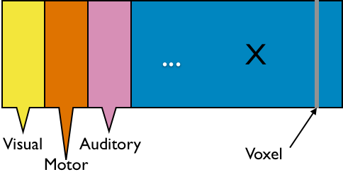
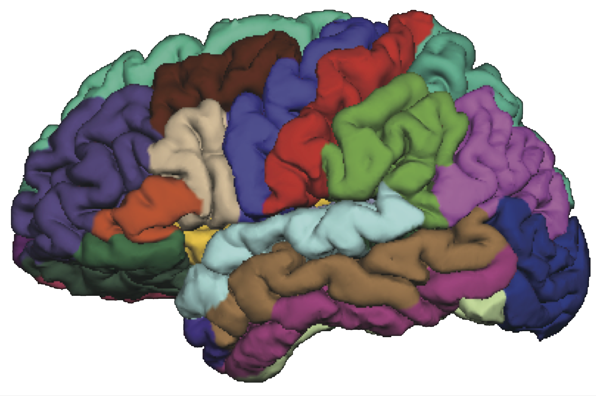
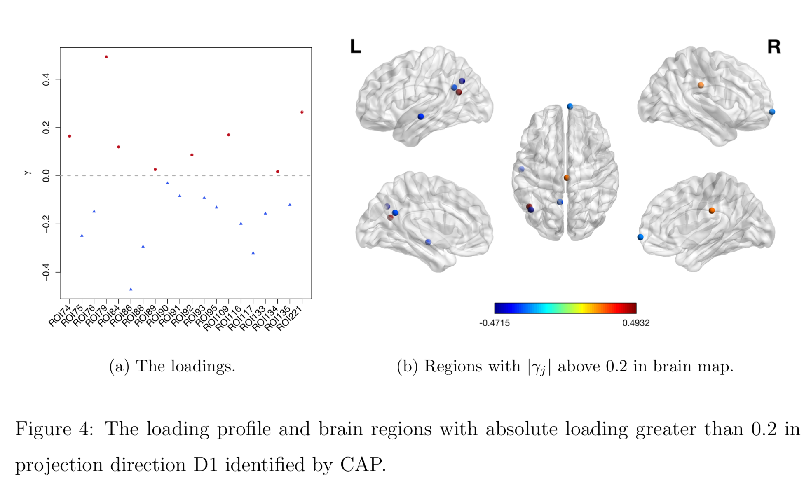

What Can We Do with Large Covariance Matrices?
Clustering and Regression?
Xi (Rossi) LUO
Health Science Center
School of Public Health
Dept of Biostatistics
and Data Science
ABCD Research Group

Feburary 12, 2019
Funding: NIH R01EB022911, P20GM103645, P01AA019072, P30AI042853; NSF/DMS (BD2K) 1557467
Goals
- Define a
global criterion, instead ofpair-wise "closeness" criteria, for variable clustering - Regress covariance matrix outcomes on vector predictors
Slides viewable on web:
bit.ly /icsa19
Clustering
Co-Authors
Florentina Bunea
Cornell University

Christophe Giraud
Paris Sud University
Martin Royer
Paris Sud University
Nicolas Verzelen
INRA
fMRI data: blood-oxygen-level dependent (BOLD) signals from each
Data Matrix
- Matrix $X_{n \times p}$, all columns standardized
- $n$ time points but temporal correlation removed, like iid
- $p$ voxels but with spatial corraltion
  - Interested in
big spatial networks- Voxel level: $10^6 \times 10^6$ cov matrix but limited interpretability
"Network of Networks"
- Hierarchical Covariance Model (a latent var model)
- Some ongoing research related to this model
- How to cluster variables together?
- How to estimate cluster signals?
- How to estimate between-cluster connections?
- This talk on how to
group(clustering) nodes- Usually NP-hard and limited theory
Example
Example: SP 100 Data
- Daily returns from stocks in SP 100
- Stocks listed in Standard & Poor 100 Indexas of March 21, 2014
- between January 1, 2006 to December 31, 2008
- Each stock is a variable
- Cov/Cor matrices (Pearson's or Kendall's tau)
-
Re-order stocks by clusters - Compare cov patterns with different clustering/ordering
-
Cor after Grouping by Clusters
Ours yields stronger
Color bars: variable groups/clusters
Off-diagonal: correlations across clusters
Clustering Results
| Industry |
|
Kmeans | Hierarchical Clustering |
|---|---|---|---|
| Telecom | ATT, Verizon | ATT, Verizon, Pfizer, Merck, Lilly, Bristol-Myers | ATT, Verizon |
| Railroads | Norfolk Southern, Union Pacific | Norfolk Southern, Union Pacific | Norfolk Southern, Union Pacific, Du Pont, Dow, Monsanto |
| Home Improvement | Home Depot, Lowe’s | Home Depot, Lowe’s, Starbucks | Home Depot, Lowe’s, Starbucks, Costco, Target, Wal-Mart, FedEx, United Parcel Service |
| $\cdots$ | |||
Model
Problem
- Let ${X} \in \real^p$ be a zero mean random vector
- Divide variables into partitions/clusters
- Example: $\{ \{X_1, X_3, X_7\}, \{X_2, X_5\}, \dotsc \}$
- Theoretical: define
uniquely identifiable partition $G$ such that all $X_a$ in $G_k$ are statistically"similar" - DS: find
"helpful" partition that show cov patterns
Related Methods
- Clustering: Kmeans and hierarchical clustering
- Advantages: fast, general, popular
- Limitations: low signal-noise-ratio, theory
- Community detection: huge literature see review Newman, 2003 but start with observed
adjacency matrices
Kmeans
Low noise
High noise
- Cluster points together if pairwise distance small
- Clustering accuracy
depends on the noise
Kmeans: Generative Model
- Data $X_{n\times p}$: $p$ variables from partition $G$: $$G=\{ \{X_1, X_3, X_7\}, \{X_2, X_5\}, \dotsc \}$$
- Mixture Gaussian: if variable $X_j \in \real^n$ comes from cluster $G_k$ Hartigan, 1975 $$X_{j} = Z_k + \epsilon_j, \quad Z_k \bot \epsilon_j $$
- Kmeans minimizes over $G$ (and centroid $Z$): $$\sum_{k=1}^K \sum_{j\in G_k} \left\| X_j - Z_k \right\|_2^2 $$
$G$-Latent Cov
- We call $G$-latent model: $$X_{j} = Z_k + \epsilon_j, \quad Z_k \bot \epsilon_j \mbox{ and } j\in G_k $$
- WLOG, all variables are standardized
- Intuition: variables $j\in G_k$ form net communitiesLuo, 2014
Matrix Representation
$$ X_{n\times p}=\underbrace{Z_{n\times k}}_\text{Source/Factor} \quad \underbrace{G_{k\times p}}_\text{Mixing/Loading} + \underbrace{E_{n\times p}}_{Error} \qquad Z \bot E$$
- Clustering: $G$ is $0/1$ matrix for $k$ clusters/ROIs
- Decomposition: under
conditions - PCA/factor analysis: orthogonality
- ICA: orthogonality → independence
- matrix decomposition: e.g. non-negativity
- Our model
identifiable even if $\cor(Z_1, Z_2) \ne 0$- Two brain clusters red/blue talk to each other
- Identifiable if "$\cor(Z_1, Z_2) \gt \var(Z_1)\gt \var(Z_2)$"
- Other models
identifiable usually if $\cor(Z_1, Z_2) = 0$
Principals Behind Other Clustering
- The Euclidean distance for hierarchical clustering and Kmeans, for two columns/voxles $X_a$ and $X_b$: $$ \|X_a - X_b \|_2^2 = 2(1-\cor(X_a, X_b)) $$
- Cluster $a$ and $b$ based on these
two variables only, and this isNOT what we will consider in $G$-models - Recall $X_i = Z_k + E_i$ $i \in G_k$
- Cor depends
mainly on $\var(E)$ if SNR is low - Distance
- larger even if generated by same $Z$ and large error
- smaller even if generated by different $Z$ and small error
- Worse, clusters close because of correlated $Z$
Generalization:
Latent Var $\rightarrow$ Block Cov
Example: $G$-Block
-
Set $G=\ac{\ac{1,2};\ac{3,4,5}}$, $X \in \real^p$ has $G$-block cov
$$\Sigma =\left(\begin{array}{ccccc} {\color{red} D_1} & {\color{red} C_{11} }&C_{12} & C_{12}& C_{12}\\ {\color{red} C_{11} }&{\color{red} D_1 }& C_{12} & C_{12}& C_{12} \\ C_{12} & C_{12} &{\color{green} D_{2}} & {\color{green} C_{22}}& {\color{green} C_{22}}\\ C_{12} & C_{12} &{\color{green} C_{22}} &{\color{green} D_2}&{\color{green} C_{22}}\\ C_{12} & C_{12} &{\color{green} C_{22}} &{\color{green} C_{22}}&{\color{green} D_2} \end{array}\right) $$ - Matrix math: $\Sigma = G^TCG + d$
- We allow $|C_{11} | \lt | C_{12} |$ or $C \prec 0$
- Kmeans/HC leads to block-diagonal cor matrices (permutation)
- Clustering based on $G$-Block
- Generalizing $G$-Latent which requires $C\succ 0$
Minimum $G$ Partition
Method
New Metric:
CORD
- First, pairwise correlation distance (like Kmeans)
- Gaussian copula: $$Y:=(h_1(X_1),\dotsc,h_p(X_p)) \sim N(0,R)$$
- Let $R$ be the correlation matrix
- Gaussian: Pearson's
- Gaussian copula: Kendall's tau transformed, $R_{ab} = \sin (\frac{\pi}{2}\tau_{ab})$
- Second, maximum difference of correlation distances $$\d(a,b) := \max_{c\neq a,b}|R_{ac}-R_{bc}|$$
- Third, group variables $a$, $b$ together if $\d(a,b) = 0$
The enemy of my enemy is my friend!
Image credit: http://sutherland-careers.com/
Algorithm: Main Idea
- Greedy: one cluster at a time, avoiding NP-hard
- Cluster variables together if CORD metric $$ \max_{c\neq a,b}|\hat{R}_{ac}-\hat{R}_{bc}| \lt \alpha$$ where $\alpha$ is a tuning parameter
- $\alpha$ is chosen by theory or CV
Theory
Condition
Consistency
Minimax
Choosing Number of Clusters
- Split data into 3 parts
- Use part 1 of data to estimate clusters $\hat{G}$ for each $\alpha$
- Use part 2 to compute between variable difference $$ \delta^{(2)}_{ab} = R_{ac}^{(2)} - R_{bc}^{(2)}, \quad c \ne a, b. $$
- Use part 3 to generate "CV" loss $$ \mbox{CV}(\hat{G}) = \sum_{a \lt b} \| \delta^{(3)}_{ab} - \delta^{(2)}_{ab} 1\{ a \mbox{ not clustered w/ } b \} \|^2_\infty. $$
- Pick $\alpha$ with the smallest loss above
Theory for CV
Simulations
Setup
- Generate from various $C$: block, sparse, negative
- Compare:
- Exact recovery of groups (theoretical tuning parameter)
- Cross validation (data-driven tuning parameter)
- Cord metric vs (semi)parametetric cor (regardless of tuning)
Exact Recovery
Different models for $C$="$\cov(Z)$" and $\alpha = 2 n^{-1/2} \log^{1/2} p$
Vertical lines: theoretical sample size based on our lower bound
HC and Kmeans fail even if inputting the true $K$.
Cross Validation
CV selects the constants to yield close to 100% recovery, as predicted by our theory (at least for large $n>200$)
Real Data
fMRI Studies
Sub 1, Sess 1
Time 1
2
…
~200
⋮
Sub i, Sess j
…
⋮
Sub ~100, Sess ~4
…
This talk: one subject, two sessions (to test replicability)
Functional MRI
- fMRI matrix: BOLD from different brain regions
- Variable: different brain regions
- Sample: time series (after whitening or removing temporal correlations)
-
Clusters of brain regions
- Two data matrices from two scan sessions OpenfMRI.org
- Use Power's 264 regions/nodes
Test Prediction/Reproducibilty
- Find partitions using the first session data
- Average each block cor to improve estimation
- Compare with the cor matrix from the second scan $$ \| Avg_{\hat{G}}(\hat{\Sigma}_1) - \hat{\Sigma}_2 \|$$ where we used $\hat{G}$ to do block-averaging.
- Difference is
smaller if clustering $\hat{G}$ isbetter
Vertical lines: fixed (solid) and data-driven (dashed) thresholds
Visual-motor task!
Discussion
- Cov + clustering = Connectivity + ROI
- Identifiability, accuracy, optimality
- $G$-models: $G$-latent, $G$-block, $G$-exchangeable
- New metric, method, and theory
- Paper: google
"cord clustering" (arXiv 1508.01939)- To appear in Annals of Statistics, 2019
- R package:
cord on CRAN
Matix Regression
Co-Authors
Yi Zhao
Johns Hopkins Biostat
Bingkai Wang
Johns Hopkins Biostat
Johns Hopkins Medicine
Brian Caffo
Johns Hopkins Biostat
Motivating Example
Brain network connections vary by covariates (e.g. age/sex)
Resting-state fMRI Networks
- fMRI measures brain activities over time
- Resting-state: "do nothing" during scanning
- Brain networks constructed using
cov/cor matrices of time series
Mathematical Problem
- Given $n$ (semi-)positive matrix outcomes, $\Sigma_i\in \real^{p\times p}$
- Given $n$ corresponding vector covariates, $x_i \in \real^{q}$
- Find function $g(\Sigma_i) = x_i \beta$, $i=1,\dotsc, n$
- In essense,
regress matrices on vectors
Some Related Problems
- Heterogeneous regression or weighted LS:
- Usually for scalar variance $\sigma_i$, find $g(\sigma_i) = f(x_i)$
- Goal: to improve efficiency, not to interpret $x_i \beta$
- Covariance models Anderson, 73; Pourahmadi, 99; Hoff, Niu, 12; Fox, Dunson, 15; Zou, 17
- Model $\Sigma_i = g(x_i)$, sometimes $n=i=1$
- Goal: better models for $\Sigma_i$
- Multi-group PCA Flury, 84, 88; Boik 02; Hoff 09; Franks, Hoff, 16
- No regression model, cannot handle vector $x_i$
- Goal: find common/uncommon parts of multiple $\Sigma_i$
- Ours: $g(\Sigma_i) = x_i \beta$, $g$ inspired by PCA
Massive Edgewise Regressions
- Intuitive method by mostly neuroscientists
- Try $g_{j,k}(\Sigma_i) = \Sigma_{i}[j,k] = x_i \beta$
- Repeat for all $(j,k) \in \{1,\dotsc, p\}^2$ pairs
- Essentially $O(p^2)$ regressions for each connection
- Limitations: multiple testing $O(p^2)$, failure to accout for dependencies between regressions
Model and Method
Model
- Find principal direction (PD) $\gamma \in \real^p$, such that: $$ \log({\gamma}^\top\Sigma_{i}{\gamma})=\beta_{0}+x_{i}^\top{\beta}_{1}, \quad i =1,\dotsc, n$$
Example (p=2): PD1 largest variation but not related to $x$
PCA selects PD1, Ours selects
Advantages
- Scalability: potentially for $p \sim 10^6$ or larger
- Interpretation: covariate assisted PCA
- Turn
unsupervised PCA intosupervised
- Turn
- Sensitivity: target those covariate-related variations
Covariate assisted SVD?
- Applicability: other big data problems besides fMRI
Method
- MLE with constraints: $$\scriptsize \begin{eqnarray}\label{eq:obj_func} \underset{\boldsymbol{\beta},\boldsymbol{\gamma}}{\text{minimize}} && \ell(\boldsymbol{\beta},\boldsymbol{\gamma}) := \frac{1}{2}\sum_{i=1}^{n}(x_{i}^\top\boldsymbol{\beta}) \cdot T_{i} +\frac{1}{2}\sum_{i=1}^{n}\boldsymbol{\gamma}^\top \Sigma_{i}\boldsymbol{\gamma} \cdot \exp(-x_{i}^\top\boldsymbol{\beta}) , \nonumber \\ \text{such that} && \boldsymbol{\gamma}^\top H \boldsymbol{\gamma}=1 \end{eqnarray}$$
- Two obvious constriants:
- C1: $H = I$
- C2: $H = n^{-1} (\Sigma_1 + \cdots + \Sigma_n) $
Choice of $H$
Will focus on the constraint (C2)
Algoirthm
- Iteratively update $\beta$ and then $\gamma$
- Prove explicit updates
- Extension to multiple $\gamma$:
- After finding $\gamma^{(1)}$, we will update $\Sigma_i$ by removing its effect
- Search for the next PD $\gamma^{(k)}$, $k=2, \dotsc$
- Impose the orthogonal constraints such that $\gamma^{k}$ is orthogonal to all $\gamma^{(t)}$ for $t\lt k$
Theory for $\beta$
Theory for $\gamma$
Simulations
PCA and common PCA do not find the first principal direction, because they don't model covariates
Resting-state fMRI
Regression Coefficients
Age
Sex
Age*Sex
No statistical significant changes were found by massive edgewise regression
Brain Map of $\gamma$
Discussion
- Regress matrices on vectors
- Method to identify covariate-related directions
- Theorectical justification
- Manuscript: DOI: 10.1101/425033
- R pkg:
cap